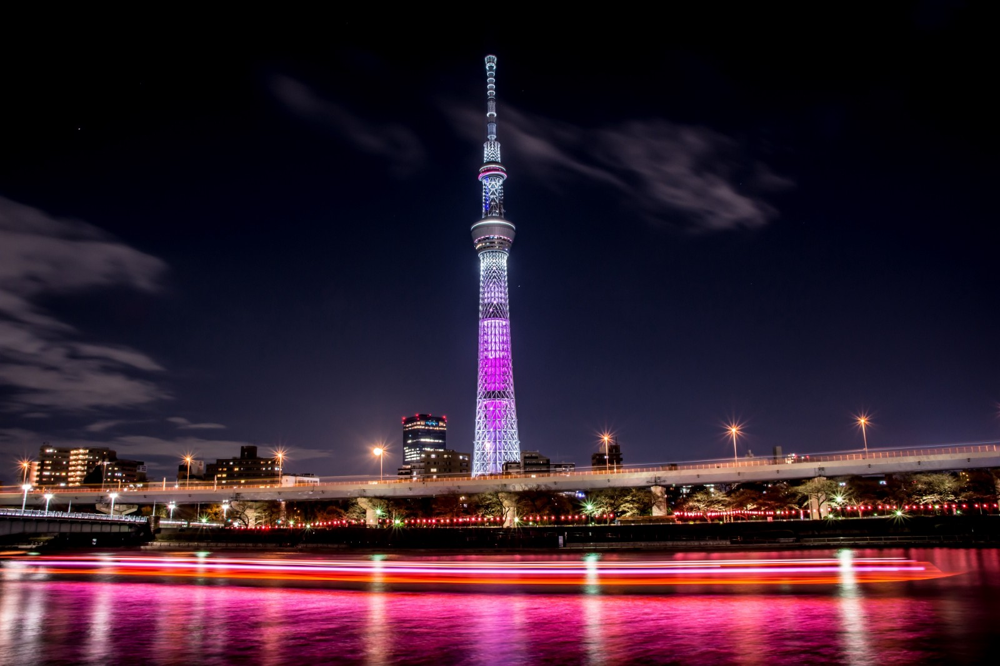

Sobre
A região metropolitana de Tóquio é a maior do mundo com aproximadamente 37 milhões de habitantes
Mais informações sobre TóquioPontos turisticos de Tóquio
- Sky Tree
- Akihabara
- Shibuya
Estações mais movimentadas de Tóquio
- Estação de Shinjuku
- 3,64 milhões
- Estação de Ikebukuro
- 2,71 milhões
- Estação de Shibuya
- 2,18 milhões
- Estação de Yokohama
- 2,09 milhões
- Estação de Tóquio
- 1,12 milhões
- Estação de Shinagawa
- 0,91 milhões
- Estação de Takadanobaba
- 0,90 milhões
- Estação de Shimbashi
- 0,85 milhões
